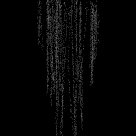
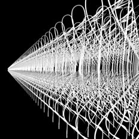
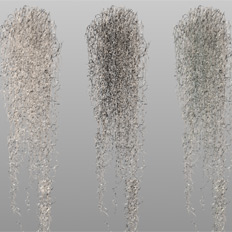
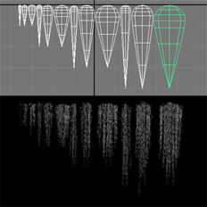

The animations on this page demonstrate the support offered by RenderMan for level-of-detail (LOD). Three models of a short length of Spanish Moss (Tillandsia Usneoides) were made in Maya. Using LOD the renderer selects the appropriate model to render based on the area of screen space occupied by the model.
These reference photos are showing what I have tried to acheve in this project. The biggest challenge was to generate and render the huge amount of geometry as seen on the second image. The first part of the modeling was to create several varioations of moss strings and several levels of detail for each of them.
Modeling was done using curves and paint effect brushes (tubes) applied to curves. Tube width, sample rate and number of segments are attached to custom control attributes of a main curve. Local width of the tubes is controlled with spherical modifiers which are parented to the curves. Also, individual branching groups (flowers) are attached to the main curve using motion path. Each motion path has only one key-frame. That makes each group fixed in a position on the curve. Also, another group is used for rotation of the curves with another custom attribute. I have chosen this technique for easier modelling of the different variations of the moss. Also, sample rate and segment controls tured out to be an easy way to create different levels of details.
After making 10 variations of a moss string, I made a python script for procedural generation of moss clumps. The script takes four parameters (lenght, width, density and seed)and gives a rib output with multiple archives of the previously modelled strings. Each archive has "detail" statements with multiple rib files for each string. Later on, these archives will be used instead of proxy objects in Maya scene.
The image on the left shows some of the results made during coding stage. During this process I had many problems with python compatibility with Maya and Renderman but I managed to work it out. If you are interested, you can look at the code here.
Rendering huge amounts of spanish moss would be impossible without LOD (level of detail) optimization. That is a technique that substitutes a model with a simpler one when it gets far enough. Cross-dissolve transition between the two models makes the switching smooth. I have used procedural DelayedReadArchive instead of regular ReadArcive because in significantly reduces pre-render and overall render time. The images below show render times with and without LOD optimization. Here is the rib archive with lod statements.

3000 copies
Level 1 (curves)
Pre-render: 16 sec.
Render time: 9 sec.
This image shows first material and lighting tests. If you look closely to the reference images above, you will notice that the inside parts of the moss clumps are darker than the outside. It is because the light cant go trough. One of the ways to achieve this with renderman is to use shadows. I prefer raytrace shadows because it gives much more precise results. By tuning shadow color and light source radius (angle) we can the adjust effect.
{kind=link}
{kind=link}
{kind=link}
{kind=link}
{kind=link}